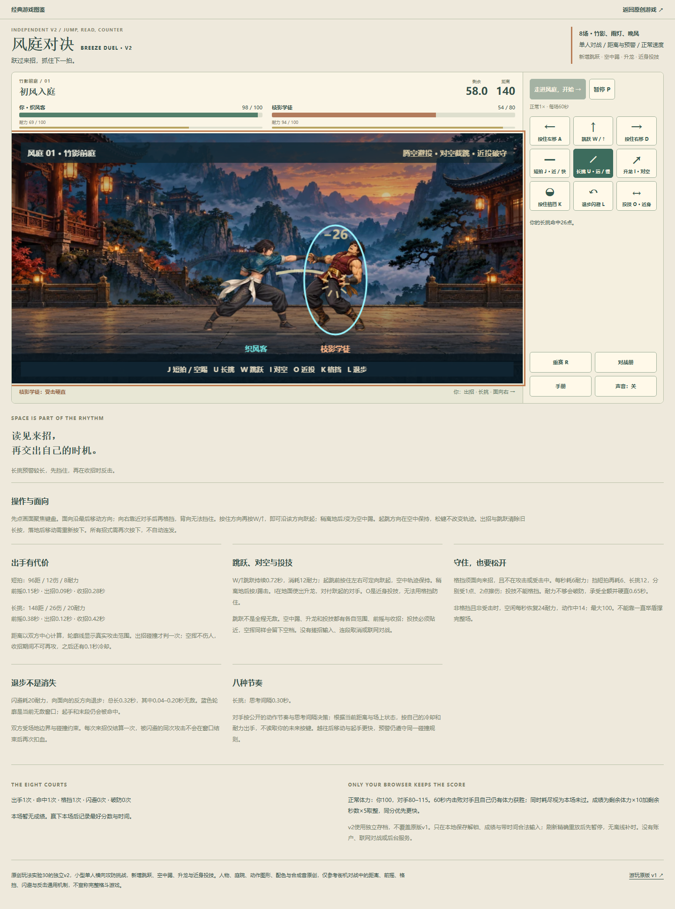
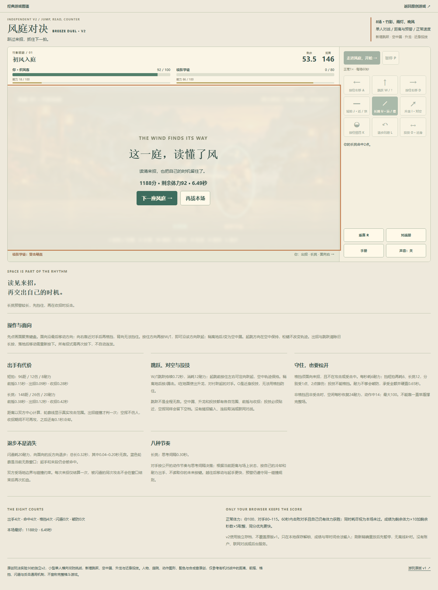
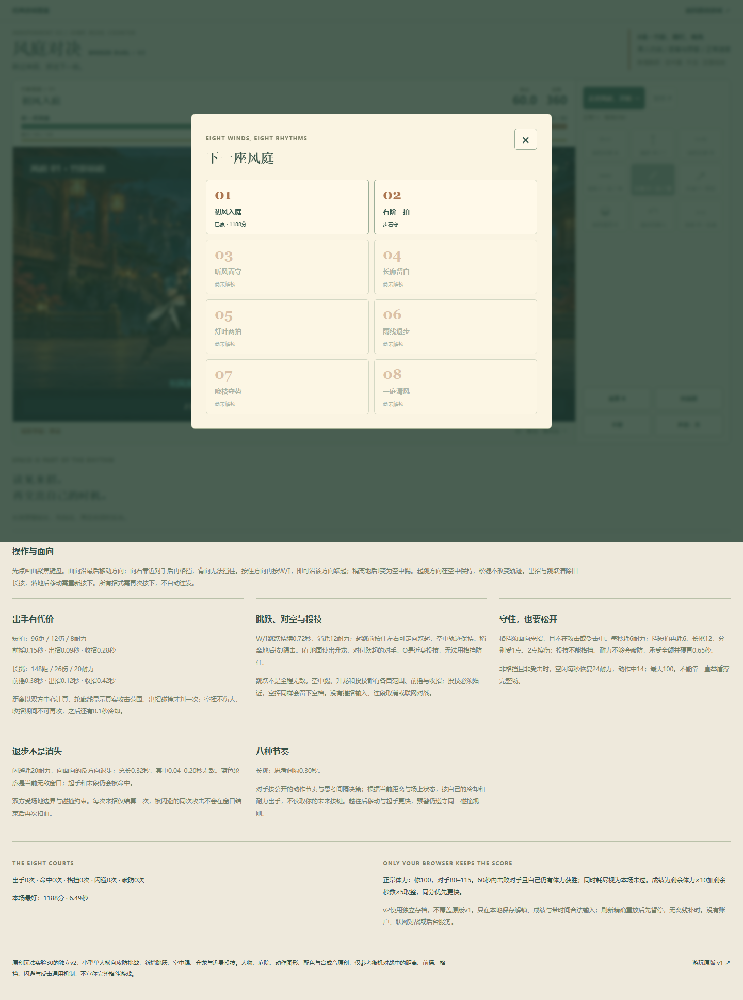
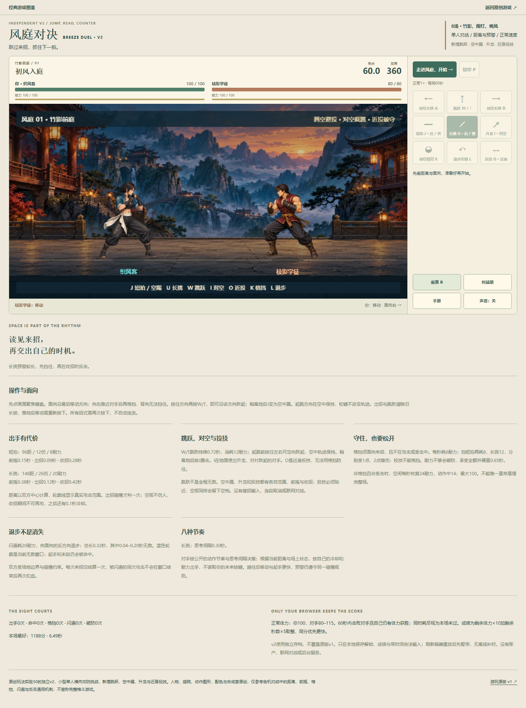
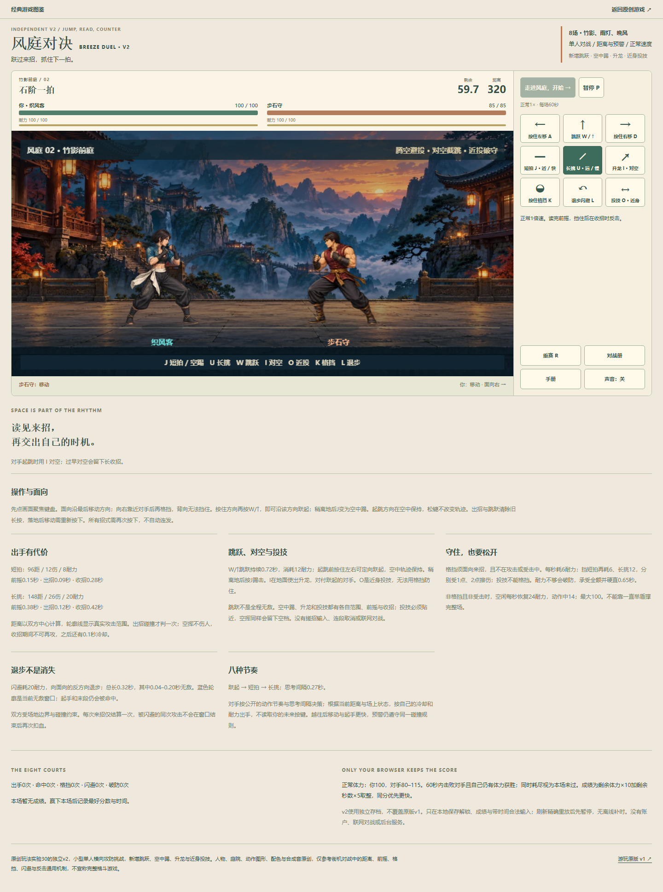

打开风庭对决 v2 · 游戏图鉴首胜之后，成绩与下一庭都留住
2026-10-20，公开页面，正常UI与按键，空存档开始。一次首庭胜利：4次长挑命中、4次格挡，己92/敌0，6.49秒，1188分。没有注入血量、解锁、存档或时钟，没有改游戏规则、美术或代码。
刷新回准备态后，最好成绩保留，第二庭可选、第三庭仍锁。短时部分重赛消耗资源与触发动作后，正常重赛恢复全部资源但保留纪录。随后从重赛准备态进入第二庭并短时开始，无旧输入、招式或计时残留；不继续追第二庭或八庭通关。
可见HUD指导的自动化策略，非人工盲玩；现有只读诊断只作审计记录。模型与输入离线重放单列，不能当作额外UI胜利。未验真机触屏、窄屏、声音、全部招式互克、整体难度或审美。
完整方法与边界 · 真实公开UI原报告 · 离线输入核对 · 单一模型可行性 · 保全记录
初始资源 · 首庭未解锁后续运行中 · 可见命中26点，敌80→54
同一场 · 正常首胜1188分
刷新后 · 首庭最好保留对战册 · 第二可选、第三仍锁
部分重赛 · 已消耗耐力且有动作正常重赛 · 资源重置、纪录保留
第二庭 · 准备态全新资源第二庭开始 · 无旧输入或攻击
本轮仅证据文档交付，游戏运行文件保持原样。所有图片为页面原生截图，没有拼接、重绘或把素材当作实玩帧。